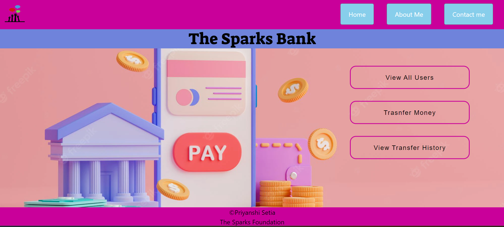

Objective
I am a third-year information technology student seeking a responsible position in a reputable IT-based industry in order to gain practical experience and serve my organization.
Skills
I have proficient skills in C,C++,Java,Javascript data structures.I am interested in learning about new technologies and expanding my knowledge
Projects
Mini - Bank website
In this project, I used HTML, CSS,Javascript , PHP, MySQL and XAMPP Server. It was a part o my internship at the sparks foundation from december 2022 to January 2023.
Flipkart Clone Website
I made the clone of Flipkart shopping website using HTML and CSS.
Feedback Software
I made a complete working feedback giving website using HTML, CSS , Javascript, PHP, MySQL and XAMPP Server. It was a part of my summer internship at the Center for Fire, Explosives and Research Center, DRDO, Delhi.
Foodie-Blog Website
I made a basic Foodie blog website using HTML and CSS.

Work-Experience
Oasis Infobyte
Web-Developement Intern
February 2023 - Current